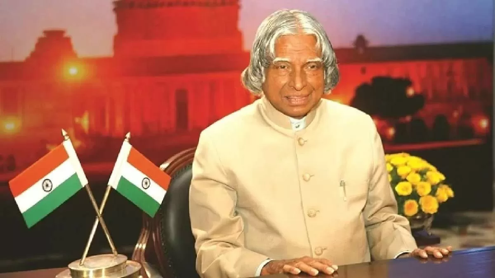
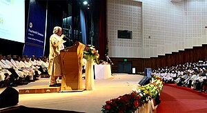

|  |
apj abdul kalamKalam was elected as the 11th president of India in 2002 with the support of both the ruling Bharatiya Janata Party and the then-opposition Indian National Congress. Widely referred to as the "People's President",[6] he returned to his civilian life of education, writing and public service after a single term. He was a recipient of several prestigious awards, including the Bharat Ratna, India's highest civilian honour. While delivering a lecture at the Indian Institute of Management Shillong, Kalam collapsed and died from an apparent cardiac arrest on 27 July 2015, aged 83.[7] Thousands, including national-level dignitaries, attended the funeral ceremony held in his hometown of Rameswaram, where he was buried with full state honours.[8] |
Early life and education
Avul Pakir Jainulabdeen Abdul Kalam was born on 15 October 1931, to a Tamil Muslim family in the pilgrimage centre of Rameswaram on Pamban Island, then in the Madras Presidency and now in the State of Tamil Nadu. His father Jainulabdeen Marakayar was a boat owner and imam of a local mosque;[9] his mother Ashiamma was a housewife.[10][11][12][13] His father owned a ferry that took Hindu pilgrims back and forth between Rameswaram and the now uninhabited Dhanushkodi.[14][15]
Kalam was the youngest of four brothers and one sister in his family.[16][17][18] His ancestors had been wealthy Marakayar traders and landowners, with numerous properties and large tracts of land. Marakayar are a Muslim ethnic group found in coastal Tamil Nadu and Sri Lanka who claim descent from Arab traders and local women. The family business had involved trading groceries between the mainland and the island and to and from Sri Lanka, as well as ferrying pilgrims between the mainland and Pamban. With the opening of the Pamban Bridge to the mainland in 1914, however, the businesses failed and the family fortune and properties were lost by the 1920s, apart from the ancestral home. The family was poverty-stricken by the time Kalam was born. As a young boy he had to sell newspapers to add to the family's meager income. [19][20][21]
In his school years, Kalam had average grades but was described as a bright and hardworking student who had a strong desire to learn. He spent hours on his studies, especially Mathematics.[21] After completing his education at Schwartz Higher Secondary School, Ramanathapuram, Kalam went on to attend the St. Joseph's College, Tiruchirappalli from where he graduated in Physics in 1954.[22]
Kalam moved to Madras in 1955 to study aerospace engineering in Madras Institute of Technology.[13] While Kalam was working on a senior class project, the Dean was dissatisfied with his lack of progress and threatened to revoke his scholarship unless the project was finished within the next three days. Kalam met the deadline, impressing the Dean, who later said to him, "I was putting you under stress and asking you to meet a difficult deadline."[23] He narrowly missed achieving his dream of becoming a fighter pilot, as he placed ninth in qualifiers, and only eight positions were available in the IAF.[24]
Career as a scientist
After graduating from the Madras Institute of Technology in 1960, Kalam joined the Aeronautical Development Establishment of the Defence Research and Development Organisation (by Press Information Bureau, Government of India) as a scientist after becoming a member of the Defence Research & Development Service (DRDS). He started his career by designing a small hovercraft, but remained unconvinced by his choice of a job at DRDO.[26] Kalam joined the INCOSPAR, working under Vikram Sarabhai, the renowned space scientist.[13] He was interviewed and recruited into ISRO by H. G. S. Murthy, the first Director of Thumba Equatorial Rocket Launching Station (TERLS).[27] In 1969, Kalam was transferred to the Indian Space Research Organisation (ISRO) where he was the project director of India's first Satellite Launch Vehicle (SLV-III) which successfully deployed the Rohini satellite in near-earth orbit in July 1980; Kalam had first started work on an expandable rocket project independently at DRDO in 1965.[1] In 1969, Kalam received the government's approval and expanded the programme to include more engineers.[25]
|
In 1963 to 1964, he visited NASA's Langley Research Center in Hampton, Virginia; Goddard Space Flight Center in Greenbelt, Maryland; and Wallops Flight Facility.[11][28] Between the 1970s and 1990s, Kalam made an effort to develop the Polar Satellite Launch Vehicle (PSLV) and SLV-III projects, both of which proved to be successful. Kalam was invited by Raja Ramanna to witness the country's first nuclear test Smiling Buddha as the representative of TBRL, even though he had not participated in its development. In the 1970s, Kalam also directed two projects, Project Devil and Project Valiant, which sought to develop ballistic missiles from the technology of the successful SLV programme.[29] Despite the disapproval of the Union Cabinet, Prime Minister Indira Gandhi allotted secret funds for these aerospace projects through her discretionary powers under Kalam's directorship.[29] Kalam played an integral role convincing the Union Cabinet to conceal the true nature of these classified aerospace projects.[29] His research and educational leadership brought him great laurels and prestige in the 1980s, which prompted the government to initiate an advanced missile programme under his directorship.[29] Kalam and Dr V S Arunachalam, metallurgist and scientific adviser to the Defence Minister, worked on the suggestion by the then Defence Minister, R. Venkataraman on a proposal for simultaneous development of a quiver of missiles instead of taking planned missiles one after another.[30] R Venkatraman was instrumental in getting the cabinet approval for allocating ₹ 3.88 billion for the mission, named Integrated Guided Missile Development Programme (IGMDP) and appointed Kalam as the chief executive.[30] Kalam played a major part in developing many missiles under the mission including Agni, an intermediate range ballistic missile and Prithvi, the tactical surface-to-surface missile, although the projects have been criticised for mismanagement and cost and time overruns.[30][31] |
 |
Kalam served as the Chief Scientific Adviser to the Prime Minister and Secretary of the Defence Research and Development Organisation from July 1992 to December 1999. The Pokhran-II nuclear tests were conducted during this period in which he played an intensive political and technological role. Kalam served as the Chief Project Coordinator, along with Rajagopala Chidambaram, during the testing phase.[11][32] Media coverage of Kalam during this period made him the country's best known nuclear scientist.[33] However, the director of the site test, K Santhanam, said that the thermonuclear bomb had been a "fizzle" and criticised Kalam for issuing an incorrect report.[34] Both Kalam and Chidambaram dismissed the claims.[35]
In 1998, along with cardiologist Soma Raju, Kalam developed a low cost coronary stent, named the "Kalam-Raju Stent".[36][37] In 2012, the duo designed a rugged tablet computer for health care in rural areas, which was named the "Kalam-Raju Tablet".[38]